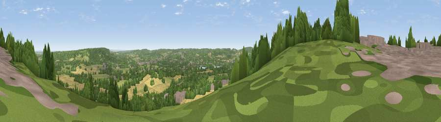

Viewpoint near Knockholt Pound
#19535 in England · top 14% of its area beats it · near Knockholt PoundWhere it is
The exact computed spot (TQ 50075 59175). Click the marker for map links.
The view, rendered

A 360° render of this exact spot computed from the terrain model, tree cover and land cover — summer colours, afternoon light, calibrated against photographs of famous viewpoints. Real trees, hedges and buildings will differ in detail.
The panorama
Grey silhouette: terrain skyline in each direction (720 bearings, Earth curvature and refraction included). Dashed green: skyline with trees (+15 m) and buildings (+8 m) as obstacles. Blue strip: how far the ground is visible on each bearing.
Where the view opens
Wedge length = distance to the farthest visible ground on that bearing (vegetation-aware). Rings at 10, 25 and 50 km.
What fills the view
44% woodland · 23% cropland · 23% grassland · 9% built-up ·
Angular shares of the visible panorama (visual magnitude), not map area. Landscape diversity 0.56 (0–1 Shannon).
Key numbers
More beautiful places nearby
The staircase of upgrades: each row has a higher view potential than everything closer. Driving times are estimates from straight-line distance, calibrated against real road routing — check an actual route before setting out.
| Place | Direction | Drive | Score |
|---|---|---|---|
| Viewpoint near Well Hill | N · 5 km | ~10 min | 54.4 |
| Betsom's Hill | WSW · 7 km | ~15 min | 57.9 |
| Viewpoint near Ide Hill | S · 7 km | ~15 min | 63.3 |
| Viewpoint near Ide Hill | S · 7 km | ~15 min | 65.1 |
| Viewpoint near Ide Hill | S · 8 km | ~16 min | 67.9 |
| Viewpoint near Shipbourne | SE · 9 km | ~18 min | 69.1 |
| Box Hill | WSW · 31 km | ~48 min | 70.4 |
| Viewpoint near Box Hill Village | WSW · 31 km | ~48 min | 71.0 |
51.31190, 0.15188 · source: screening · position refined by local search. Computed location — check access rights before visiting.